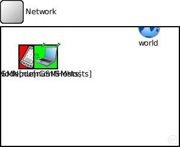
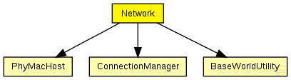
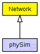

This documentation is released under the Creative Commons license
This documentation is released under the Creative Commons license(no description)
The following diagram shows usage relationships between types. Unresolved types are missing from the diagram. Click here to see the full picture.
The following diagram shows inheritance relationships for this type. Unresolved types are missing from the diagram. Click here to see the full picture.
| phySim (network) | (no description) |
| Name | Type | Default value | Description |
|---|---|---|---|
| playgroundSizeX | double |
x size of the area the nodes are in (in meters) |
|
| playgroundSizeY | double |
y size of the area the nodes are in (in meters) |
|
| playgroundSizeZ | double |
z size of the area the nodes are in (in meters) |
|
| numGSMHosts | double |
total number of weak hosts in the network |
|
| numISMHosts | double |
total number of strong hosts in the network |
| Name | Value | Description |
|---|---|---|
| display | bgb=$playgroundSizeX,$playgroundSizeY,white,,;bgp=10,50 |
| Name | Type | Default value | Description |
|---|---|---|---|
| world.coreDebug | bool |
debug switch for the base framework |
|
| world.useTorus | bool |
use the playground as torus? |
|
| world.use2D | bool |
use a 2-dimensional world? |
|
| ISMChannel.coreDebug | bool |
debug switch for core framework |
|
| ISMChannel.sendDirect | bool |
send directly to the node or create separate gates for every connection |
|
| ISMChannel.pMax | double |
maximum sending power used for this network [mW] |
|
| ISMChannel.sat | double |
minimum signal attenuation threshold [dBm] |
|
| ISMChannel.alpha | double |
minimum path loss coefficient |
|
| ISMChannel.carrierFrequency | double |
minimum carrier frequency of the channel [Hz] |
|
| GSMChannel.coreDebug | bool |
debug switch for core framework |
|
| GSMChannel.sendDirect | bool |
send directly to the node or create separate gates for every connection |
|
| GSMChannel.pMax | double |
maximum sending power used for this network [mW] |
|
| GSMChannel.sat | double |
minimum signal attenuation threshold [dBm] |
|
| GSMChannel.alpha | double |
minimum path loss coefficient |
|
| GSMChannel.carrierFrequency | double |
minimum carrier frequency of the channel [Hz] |
|
| GSMNode.utility.coreDebug | bool |
debug switch for the base framework |
|
| GSMNode.mobility.coreDebug | bool |
debug switch for the core framework |
|
| GSMNode.mobility.x | double |
x coordinate of the nodes' position (-1 = random) |
|
| GSMNode.mobility.y | double |
y coordinate of the nodes' position (-1 = random) |
|
| GSMNode.mobility.z | double |
z coordinate of the nodes' position (-1 = random) |
|
| GSMNode.arp.coreDebug | bool |
debug switch for the core framework |
|
| GSMNode.appl.debug | bool |
debug switch |
|
| GSMNode.appl.headerLength | int |
length of the application message header (in bits) |
|
| GSMNode.appl.burstSize | int |
size of the burst |
|
| GSMNode.net.notAffectedByHostState | bool | false | |
| GSMNode.net.debug | bool |
debug switch |
|
| GSMNode.net.stats | bool |
stats switch |
|
| GSMNode.net.headerLength | double |
length of the network packet header (in bits) |
|
| GSMNode.nic.phy.coreDebug | bool | ||
| GSMNode.nic.phy.headerLength | int | 0 |
defines the length of the phy header (/preamble) |
| GSMNode.nic.phy.usePropagationDelay | bool |
Should transmission delay be simulated? |
|
| GSMNode.nic.phy.thermalNoise | double |
the strength of the thermal noise [dBm] |
|
| GSMNode.nic.phy.useThermalNoise | bool |
should thermal noise be considered? |
|
| GSMNode.nic.phy.analogueModels | xml |
Specification of the analogue models to use and their parameters |
|
| GSMNode.nic.phy.decider | xml |
Specification of the decider to use and its parameters |
|
| GSMNode.nic.phy.sensitivity | double |
The sensitivity of the physical layer [dBm] |
|
| GSMNode.nic.phy.maxTXPower | double |
The maximum transimission power of the physical layer [mW] |
|
| GSMNode.nic.phy.timeRXToTX | double |
switchTimes [s]: |
|
| GSMNode.nic.phy.timeRXToSleep | double | ||
| GSMNode.nic.phy.timeTXToRX | double | ||
| GSMNode.nic.phy.timeTXToSleep | double | ||
| GSMNode.nic.phy.timeSleepToRX | double | ||
| GSMNode.nic.phy.timeSleepToTX | double | ||
| GSMNode.nic.phy.initialRadioState | int | ||
| GSMNode.nic.mac.notAffectedByHostState | bool | false | |
| GSMNode.nic.mac.coreDebug | bool |
debug switch |
|
| GSMNode.nic.mac.headerLength | double |
length of the MAC packet header (in bits) |
|
| GSMNode.nic.mac.slotDuration | double |
how long is a slot? [s] |
|
| GSMNode.nic.mac.difs | double |
maximum time between a packet and its ack [s] |
|
| GSMNode.nic.mac.maxTxAttempts | double |
maximum number of transmission attempts |
|
| GSMNode.nic.mac.queueLength | int |
length of the MAC queue |
|
| GSMNode.nic.mac.defaultChannel | double |
default channel |
|
| GSMNode.nic.mac.bitrate | double |
bit rate [bps] |
|
| GSMNode.nic.mac.txPower | double |
tx power [mW] |
|
| GSMNode.nic.mac.contentionWindow | double |
contention window |
|
| ISMNode.utility.coreDebug | bool |
debug switch for the base framework |
|
| ISMNode.mobility.coreDebug | bool |
debug switch for the core framework |
|
| ISMNode.mobility.x | double |
x coordinate of the nodes' position (-1 = random) |
|
| ISMNode.mobility.y | double |
y coordinate of the nodes' position (-1 = random) |
|
| ISMNode.mobility.z | double |
z coordinate of the nodes' position (-1 = random) |
|
| ISMNode.arp.coreDebug | bool |
debug switch for the core framework |
|
| ISMNode.appl.debug | bool |
debug switch |
|
| ISMNode.appl.headerLength | int |
length of the application message header (in bits) |
|
| ISMNode.appl.burstSize | int |
size of the burst |
|
| ISMNode.net.notAffectedByHostState | bool | false | |
| ISMNode.net.debug | bool |
debug switch |
|
| ISMNode.net.stats | bool |
stats switch |
|
| ISMNode.net.headerLength | double |
length of the network packet header (in bits) |
|
| ISMNode.nic.phy.coreDebug | bool | ||
| ISMNode.nic.phy.headerLength | int | 0 |
defines the length of the phy header (/preamble) |
| ISMNode.nic.phy.usePropagationDelay | bool |
Should transmission delay be simulated? |
|
| ISMNode.nic.phy.thermalNoise | double |
the strength of the thermal noise [dBm] |
|
| ISMNode.nic.phy.useThermalNoise | bool |
should thermal noise be considered? |
|
| ISMNode.nic.phy.analogueModels | xml |
Specification of the analogue models to use and their parameters |
|
| ISMNode.nic.phy.decider | xml |
Specification of the decider to use and its parameters |
|
| ISMNode.nic.phy.sensitivity | double |
The sensitivity of the physical layer [dBm] |
|
| ISMNode.nic.phy.maxTXPower | double |
The maximum transimission power of the physical layer [mW] |
|
| ISMNode.nic.phy.timeRXToTX | double |
switchTimes [s]: |
|
| ISMNode.nic.phy.timeRXToSleep | double | ||
| ISMNode.nic.phy.timeTXToRX | double | ||
| ISMNode.nic.phy.timeTXToSleep | double | ||
| ISMNode.nic.phy.timeSleepToRX | double | ||
| ISMNode.nic.phy.timeSleepToTX | double | ||
| ISMNode.nic.phy.initialRadioState | int | ||
| ISMNode.nic.mac.notAffectedByHostState | bool | false | |
| ISMNode.nic.mac.coreDebug | bool |
debug switch |
|
| ISMNode.nic.mac.headerLength | double |
length of the MAC packet header (in bits) |
|
| ISMNode.nic.mac.slotDuration | double |
how long is a slot? [s] |
|
| ISMNode.nic.mac.difs | double |
maximum time between a packet and its ack [s] |
|
| ISMNode.nic.mac.maxTxAttempts | double |
maximum number of transmission attempts |
|
| ISMNode.nic.mac.queueLength | int |
length of the MAC queue |
|
| ISMNode.nic.mac.defaultChannel | double |
default channel |
|
| ISMNode.nic.mac.bitrate | double |
bit rate [bps] |
|
| ISMNode.nic.mac.txPower | double |
tx power [mW] |
|
| ISMNode.nic.mac.contentionWindow | double |
contention window |
module Network { parameters: double playgroundSizeX @unit(m); // x size of the area the nodes are in (in meters) double playgroundSizeY @unit(m); // y size of the area the nodes are in (in meters) double playgroundSizeZ @unit(m); // z size of the area the nodes are in (in meters) double numGSMHosts; // total number of weak hosts in the network double numISMHosts; // total number of strong hosts in the network @display("bgb=$playgroundSizeX,$playgroundSizeY,white,,;bgp=10,50"); submodules: world: BaseWorldUtility { parameters: playgroundSizeX = playgroundSizeX; playgroundSizeY = playgroundSizeY; playgroundSizeZ = playgroundSizeZ; @display("p=250,0;i=misc/globe"); } ISMChannel: ConnectionManager { parameters: @display("p=350,0;b=42,42,rect,green,,;i=abstract/multicast"); } GSMChannel: ConnectionManager { parameters: @display("p=450,0;b=42,42,rect,red,,;i=abstract/multicast"); } GSMNode[numGSMHosts]: PhyMacHost { parameters: numHosts = numGSMHosts; @display("p=50,50;b=42,42,rect,red,,;i=device/palm"); } ISMNode[numISMHosts]: PhyMacHost { parameters: numHosts = numISMHosts; @display("p=75,50;b=42,42,rect,green,,;i=device/wifilaptop"); } connections allowunconnected: // all connections and gates are to be generated dynamically }
This documentation is released under the Creative Commons license